目次
Bench2Drive: Towards Multi-Ability Benchmarking of Closed-Loop End-To-End Autonomous Driving
Xiaosong Jia*、Zhenjie Yang*、Qifeng Li*、Zhiyuan Zhang*、Junchi Yan†
* 同等の貢献。 † 責任著者
Dept. of CSE & School of AI & MoE Key Lab of AI, Shanghai Jiao Tong University
https://thinklab-sjtu.github.io/Bench2Drive/
arXiv:2406.03877v3 [cs.RO]、2024年11月27日（38th Conference on Neural Information Processing Systems（NeurIPS 2024）Track on Datasets and Benchmarks）
翻訳について：原文 PDF は
24_Bench2Drive_2406.03877.pdf（全 26 ページ）。本文、図の説明、図中ラベル、表、脚注、付録を訳出し、論文タイトルと参考文献は原文のまま掲載。図は原図を掲載し、英語ラベルの日本語訳を併記した。数式・数値・引用番号・コードの識別子は原文を維持。原文の記述に関する補足は「訳注」と明示し、本文と区別している。
要旨
基盤モデルが急速にスケールしている時代において、自動運転技術は変革の閾値に近づいており、データ駆動でスケールアップできる可能性からエンドツーエンド自動運転（E2E-AD）が台頭している。しかし、既存の E2E-AD 手法の多くは、L2 誤差と衝突率を指標とするオープンループのログ再生方式（例：nuScenes）で評価されており、最近コミュニティで認識されているように、これではアルゴリズムの運転性能を十分に反映できない。クローズドループのプロトコルで評価される E2E-AD 手法については、運転スコアを指標として固定ルート（例：CARLA の Town05Long や Longest6）で試験されるが、これは平滑でない指標関数と長いルートにおける大きなランダム性のために分散が大きいことが知られている。さらに、これらの手法は通常、学習用データを各自で収集するため、アルゴリズムレベルでの公平な比較が不可能になっている。
完全自動運転（Full Self-Driving, FSD）のための包括的で現実的かつ公平な試験環境という最重要の要請に応えるため、我々は E2E-AD システムの多様な能力をクローズドループ方式で評価する初のベンチマークである Bench2Drive を提示する。Bench2Drive の公式学習データは、CARLA v2 において 44 の対話的シナリオ（割り込み、追い越し、迂回など）、23 の天候（晴れ、霧、雨など）、12 のタウン（都市部、村、大学など）に均等に分布する 13638 本の短いクリップから収集された、完全にアノテーションされた 200 万フレームから成る。評価プロトコルでは、E2E-AD モデルが異なる場所と天候のもとで 44 の対話的シナリオを通過することが求められ、合計 220 ルートとなる。これにより、さまざまな状況下での運転能力について包括的かつ要因分離された評価が得られる。我々は最先端の E2E-AD モデルを実装して Bench2Drive で評価し、現状と今後の方向性に関する知見を提供する。
1 はじめに
近年、基盤モデルの急速な進歩とスケーリングに後押しされ、自動運転の分野は飛躍的な成長を遂げてきた［1–3］。こうした発展はエンドツーエンド自動運転（E2E-AD）システム［4–8］という新時代をもたらした。E2E-AD は、従来のモジュールベースの知覚［9–13］、予測［14–17］、計画［18–20］のパイプラインとは対照的に、車両の自動化に対するスケーラブルでデータ駆動のアプローチを約束するものである。こうしたシステムは膨大なデータから学習できるよう設計されており、車両知能の姿を一変させる可能性を秘めている。
脚注：本研究は NSFC（92370201, 62222607）および上海市科学技術重大プロジェクト（助成番号 2021SHZDZX0102）の一部支援を受けた。（訳注：原文は「supported by by」と by が重複している。）
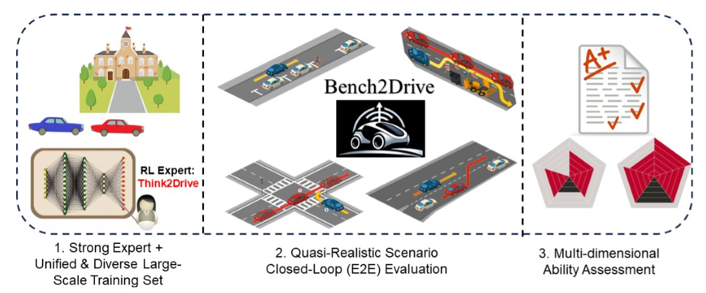
図1：Bench2Drive の概要。
図中ラベル：RL Expert: Think2Drive＝強化学習エキスパート：Think2Drive、1. Strong Expert + Unified & Diverse Large-Scale Training Set＝1. 強力なエキスパート＋統一的で多様な大規模学習セット、2. Quasi-Realistic Scenario Closed-Loop (E2E) Evaluation＝2. 準現実的シナリオによるクローズドループ（E2E）評価、3. Multi-dimensional Ability Assessment＝3. 多次元的な能力評価
こうした進歩にもかかわらず、E2E-AD システムの評価方法論は依然として重大なボトルネックである。一般的な方法の 1 つは、nuScenes［21］のようなデータセットに記録されたエキスパート軌跡を用いてログ再生を行う、すなわちオープンループ評価である。これらのモデル［4, 22］は通常、生のセンサ情報を入力として自車両の将来位置を予測する。指標としては、記録された軌跡に対する L2 誤差と衝突発生率が用いられる。しかし、コミュニティで広く議論されているように［23, 24, 19］、分布シフト［25］や因果の混同（causal confusion）［26, 27］などの問題のため、これらのオープンループ指標は計画の熟達度を示すには不十分である。nuScenes には、検証セットが小さく偏っている（フレームの約 75% は直進を続けるだけでよい）という問題もある［24］。その結果、自車両の状態（位置、速度など）のみをエンコードする手法［23］が、センサ入力を用いる複雑な手法［4］と同程度の L2 誤差を達成できてしまう。このことは、E2E-AD のためのクローズドループ評価ベンチマークの必要性を強く示している。
CARLA［28］は、クローズドループ E2E-AD 評価に最も広く用いられているシミュレータの 1 つである。そのフレームワーク内では Town05Long や Longest6 といったベンチマークが確立されており、AD システムが特定の制限時間内に安全に走破すべき複数のルートを備えている。しかし、これらのベンチマークは車線追従、右左折、衝突回避、信号遵守といった基本的なスキルしか評価せず［29, 30］、複雑で対話的な交通状況下での AD システムの運転能力を検査できていない。最新の CARLA Leaderboard v2 では、より入り組んだ状況での AD システムの頑健性を評価するために設計された 39 の挑戦的なシナリオが導入された。しかし、評価用の公式ルートは 7〜10 キロメートルにわたりシナリオが詰め込まれているため、図2（a）に示すように非常に難しく、完璧に走破することはしばしば困難すぎる。その結果、指数減衰関数を用いる運転スコア指標のもとでは、各 AD システムのスコアが非常に低くなる傾向があり、異なる AD システムを効果的に比較することが難しくなる。たとえば現在の Leaderboard v21 では、参加手法のスコアは 100 点満点中 10 点未満である。さらに、既存手法は通常データを各自で収集するため、アルゴリズムレベルでの公平な比較が不可能になっている。
脚注1：https://eval.ai/web/challenges/challenge-page/2098/leaderboard/4942
自動運転（AD）システムの評価における前述の課題に対処するには、その能力をきめ細かく公平に評価する新たなベンチマークを開発することが不可欠である。この目的のため、我々は包括的で現実的かつ公平なクローズドループ環境で E2E-AD システムを評価するよう設計された新しいベンチマーク Bench2Drive を導入する。Bench2Drive は、最先端のエキスパートモデル Think2Drive［31］によって収集された公式の学習データセットを備えており、13638 本のクリップから得られた完全にアノテーションされた 200 万フレームから成る。このデータセットは、割り込み、追い越し、迂回といった 44 の多様な対話的シナリオを、にぎやかな都心の晴れた日から趣のある村の霧の状況に至るまで、さまざまな天候条件とタウンのもとで網羅している。評価プロトコルは 220 本の短いルートを含み、各ルートは長さわずか約 150 メートルで、特定のシナリオを 1 つだけ含む。このようにして個々のスキルの評価が切り分けられるため、44 の異なるスキルセットにわたって AD システムの熟達度を詳細に比較できる。さらに、各ルートが短いことで運転スコアに対する指数減衰関数の影響が緩和され、異なるシステム間でより正確で有意義な性能比較が容易になる。このように構造化され焦点を絞ったベンチマークは、各 AD システムの長所と短所について、より明確な知見を与え、狙いを定めた改善とより洗練された技術開発を可能にする。
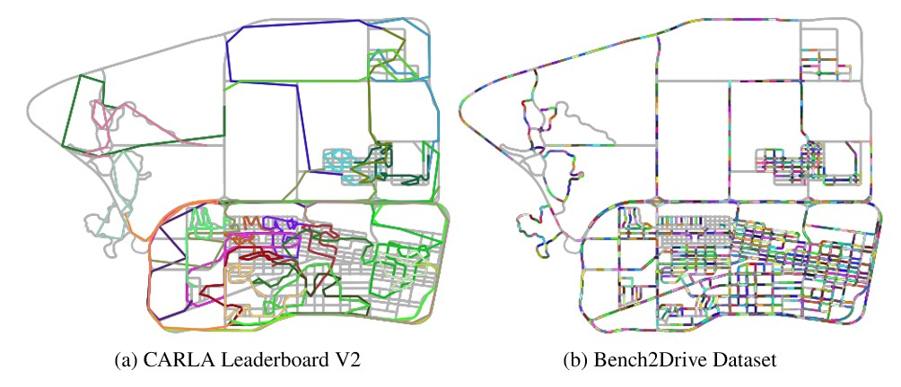
図2：Town12 におけるルート長。異なるルートを異なる色で表している。Bench2Drive の短いルートは、より平滑化された評価を提供する。
図中ラベル：(a) CARLA Leaderboard V2、(b) Bench2Drive Dataset＝(b) Bench2Drive データセット
まとめると、提案する Bench2Drive ベンチマークは次の特徴を持つ。
- 包括的なシナリオ網羅：Bench2Drive は 44 の対話的シナリオにわたって AD システムを試験するよう設計されており、複雑な状況下での能力を徹底的に評価する。
- きめ細かなスキル評価：それぞれ特定の運転シナリオに焦点を当てた 220 本の短いルートで評価を構成することにより、Bench2Drive は異なる AD システムが個々のタスクでどのように振る舞うかを詳細に分析・比較できる。
- クローズドループ評価プロトコル：Bench2Drive は、AD システムの行動が環境に直接影響するクローズドループ方式で AD システムを評価する。この設定は AD システムの運転性能を正確に評価する。
- 多様で大規模な公式学習データ：Bench2Drive は、多様なシナリオ、天候、タウンのもとでの 13638 本のクリップから得た、完全にアノテーションされた 200 万フレームの標準化された学習セットを含む。これにより、すべての AD システムが豊富かつ同様の条件下で学習されることが保証され、これはアルゴリズムレベルの公平な比較に不可欠である。
これらの特徴により、Bench2Drive は自動運転分野における先駆的なベンチマークとなり、研究者が E2E-AD システムを現実的、包括的、かつ公平な方法で改良・評価するための不可欠なツールを提供する。我々は TCP［5］、ThinkTwice［30］、DriveAdapter［27］、UniAD［4］、VAD［22］、AD-MLP［23］を含むいくつかの古典的ベースラインを実装し、それらを Bench2Drive で評価する。我々は、L2 誤差のようなオープンループ指標が実際の運転性能を反映できないという事実を確認する。古典的なクローズドループ指標である Drive Score については、詳細さに欠け、その重いペナルティが過度に保守的な運転戦略を助長することを見出した。一方、Bench2Drive は異なる手法の能力について包括的な理解を提供する。
2 関連研究
2.1 計画のベンチマーク
自動運転分野のベンチマークは、知覚のための KITTI［32］や挙動予測のための NGSIM/highD［33］、BARK［34］のような専門的データセットから、さまざまなシステム構成要素の協調的な評価を可能にする nuScenes［21］、Argoverse［35］、Waymo［36］のような統合的な形態へと進化してきた。近年、学習ベース手法の計画能力の評価が関心を集めている［37–41］。表1 に計画ベンチマークの比較を示す。nuScenes［21］はオープンループ指標を提供しているが、クローズドループのシミュレーションがないため計画の熟達度を適切に評価できないと批判されてきた［23, 24, 19］。さらに、検証セットに偏りがあり、シナリオのかなりの部分（75%）は直進走行しか必要としないため、複雑な環境における AD システムの意思決定能力を十分に試せていない［24］。nuPlan［38］と Waymax［37］はクローズドループ評価を提供するが、バウンディングボックスレベルの評価に限られ、センサシミュレーションを含まないため、E2E-AD 手法には適さない。CARLA Leaderboard V1 の改変版である Longest6［6］は、車線追従、右左折、衝突回避、信号といった基本的なスキルしか評価しない。CARLA Leaderboard V2［28］にはエキスパートのデモンストレーションデータがない。コミュニティで広く議論されているように［42, 43］、公式の学習セットがないことで、異なる手法の比較はアルゴリズムレベルではなくシステムレベルのものになってしまう。Bench2Drive は、大規模でアノテーションの豊富な公式学習データセットと多能力評価セットを併せて提供することで、これらの欠点に対処する。これにより、AD システムの運転能力について、よりきめ細かく情報量の多い評価が可能となり、全ルートの平均スコアを主要な性能指標とする既存ベンチマークの限界を克服する。
| ベンチマーク | センサ | クローズドループ | E2E シミュレーション | エキスパート | 複雑さ | 多能力評価 |
|---|---|---|---|---|---|---|
| nuScenes［21］ | ✓ | ✗ | ✗ | ✓ | ✗ | ✗ |
| nuPlan［38］ | ✓ | ✓ | ✗ | ✓ | ✓ | ✗ |
| Waymax［37］ | ✗ | ✓ | ✗ | ✓ | ✓ | ✗ |
| Longest6［6］ | ✓ | ✓ | ✓ | ✓ | ✗ | ✗ |
| CARLA LB V2［28］ | ✓ | ✓ | ✓ | ✗ | ✓ | ✗ |
| Bench2Drive（本研究） | ✓ | ✓ | ✓ | ✓ | ✓ | ✓ |
表1：関連する計画ベンチマークとの比較。Bench2Drive は、多能力分析を伴うクローズドループで E2E-AD 手法を評価する唯一のベンチマークである。
列見出しの原語：Sensor、Closed-Loop、E2E-Sim、Expert、Complex、Multi-Ability-Eval。
2.2 エンドツーエンド自動運転
E2E-AD の概念は 1980 年代にまで遡ることができる［44］。近年、ニューラルネットワーク、特に Transformer［45］の台頭がスケーリング則の力を示し、E2E-AD への熱意を再燃させた［46–50］。しかし、それらはオープンループ方式でのみ評価されるか［51, 4, 22, 52］、Town05Long/Longest6 のような比較的単純なシーンで評価されている［53, 54, 42, 55–60］。Bench2Drive は、E2E-AD 手法の能力を比較するための挑戦的で包括的な場を提供する。
3 Bench2Drive
Bench2Drive は、公式学習セットとして CARLA で収集された大規模で完全にアノテーションされたデータセット、きめ細かな運転スキル評価のための評価ツールキット、そして学習データセットと評価ツールキットに合わせて調整されたいくつかの最先端 E2E-AD 手法の実装から構成される。すべてのデータ、コード、チェックポイントは Apache License 2.0 のもとで GitHub と Huggingface で公開されている。以下の節で詳細を述べる。
3.1 データ収集エージェント
データ収集エージェント（エキスパート）は、生徒モデルがデータから学習できるようにデータを収集する役割を担う。現実世界では、KITTI［32］、nuScenes［21］、Waymo［36］、Argoverse［35］の整備のように、通常は人間が市街を運転して回ることでこれが行われる。しかし、これには多大な人的労力が必要である。シミュレーションでは、安価な代替手段として教師モデルがある。教師モデルは、現実世界では利用できない情報（特権情報と呼ばれる）、たとえば周囲のエージェントの真の位置・状態・意図や信号機の真の状態などを利用する。その結果、CARLA の利用者は、特権情報を用いてシミュレーション内を運転するために、ルールを記述するか［43, 61］、強化学習（RL）モデルを学習させる［50, 31］。
本研究では、CARLA 内を走行してデータを収集するために、世界モデルに基づく強化学習教師である Think2Drive［31］を用いる。これは、Bench2Drive の構築時点で 44 のシナリオすべてを解くことができた唯一のエキスパートモデルであるためである。なお、Bench2Drive の公開後、ルールベースのエキスパート PDM-Lite［61］2 がオープンソース化されており、利用者は独自の要求に合わせてそれを使うことができる。
脚注2：https://github.com/autonomousvision/carla_garage/tree/leaderboard_2
3.2 エキスパートデータセット
クローズドループ方式で評価される既存の E2E-AD 手法［5, 6, 56, 57］は、通常 CARLA シミュレータを用いて独自のデータを収集する。しかし、［42, 43］で強調されているように、これらのデータセットの規模と分布は性能に大きく影響し、アルゴリズムレベルでの公平な比較を困難にしている。これに対処するため、我々は公式学習セットとして、3D バウンディングボックス、深度、セマンティックセグメンテーションを含む包括的なアノテーションを備え、10 Hz でサンプリングされた大規模なエキスパートデータセットを構築した。エキスパートからの情報は生徒モデルにとって重要な指針になりうるため［49, 27, 60］、エキスパートモデルである Think2Drive［31］の価値推定と特徴量も提供する。図3 に概要を示す。コミュニティによる既存 E2E-AD 手法の再実装を容易にするため、nuScenes［21］と同様のセンサ構成を採用する。
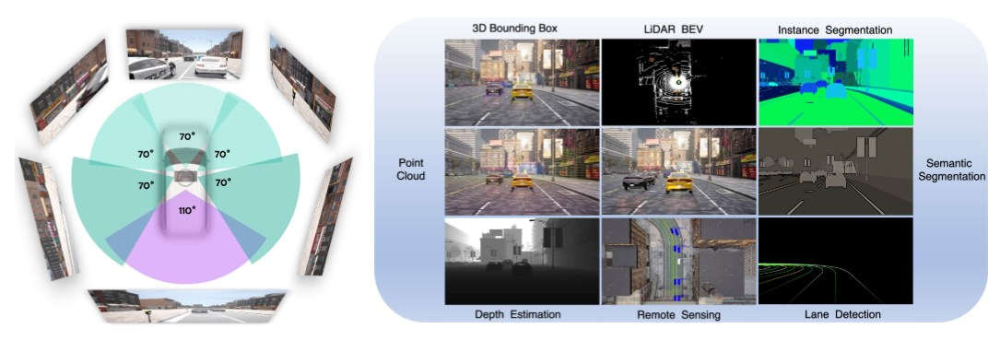
図3：エキスパートデータセットのセンサ設定とアノテーション。センサ設定は nuScenes［21］に従う。アノテーションには、3D バウンディングボックス、深度、セマンティック／インスタンスセグメンテーション、HD マップ、および Think2Drive［31］エキスパートによる強化学習の価値推定と特徴量が含まれる。
図中ラベル：3D Bounding Box＝3D バウンディングボックス、LiDAR BEV＝LiDAR 鳥瞰図（BEV）、Instance Segmentation＝インスタンスセグメンテーション、Point Cloud＝点群、Semantic Segmentation＝セマンティックセグメンテーション、Depth Estimation＝深度推定、Remote Sensing＝リモートセンシング（上空視点）、Lane Detection＝車線検出。左図の角度（70°、110°）は各カメラの水平視野角。
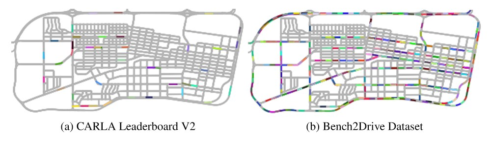
図4：Town12 におけるシナリオ「ConstructionObstacle」の分布。「ConstructionObstacle」を含む異なるルートを異なる色で表している。Bench2Drive には「ConstructionObstacle」を生成できる場所がより多くある。
図中ラベル：(a) CARLA Leaderboard V2、(b) Bench2Drive Dataset＝(b) Bench2Drive データセット
- 1 台の LiDAR：64 チャネル、測距範囲 85 メートル、毎秒 600,000 点
- 6 台のカメラ：全周をカバー、解像度 900x1600、JPEG 圧縮（品質レベル 20）
- 5 台のレーダ：測距範囲 100 メートル、水平・垂直視野角（FoV）30°
- 1 台の IMU & GNSS：位置、ヨー角、速度、加速度、角速度
- 1 台の BEV カメラ：デバッグ、可視化、リモートセンシング
- HD マップ：車線、中心線、トポロジー、動的な信号状態、信号機と一時停止標識のトリガー領域
さらに、知覚と挙動の両面におけるデータのロングテール分布は自動運転における重大なボトルネックである［62］（nuScenes のクリップの約 75% は自車両の直進のみを含む）。この課題に取り組むため、天候条件、景観、挙動の分布ができるだけ均一になるようにした。図4 に示すように、CARLA Leaderboard V2 の公式ルートと比べてシナリオを配置できる場所を増やし、データの多様性を高めた。さらに、挙動の多様性を高めるため、付録 G で詳述するように Leaderboard V2 に加えて 5 つのシナリオを設計した。シナリオ、天候、タウンの分布は付録 B に示す。図示のとおり、Bench2Drive データセットは知覚と挙動の両面で多様性に富んでいる。
データ分割については、運転過程を、それぞれ長さ約 150 メートルで特定のシナリオを 1 つだけ含む短いクリップに分割した。この分割により、個々の運転スキルのカリキュラム学習［63］が可能になる。異なる計算能力に対応するため、3 つのデータサブセットを設計した：mini（デバッグと可視化用の 10 クリップ）、base（1,000 クリップ、nuScenes に匹敵し、8xRTX3090 サーバに適する）、full（大規模研究用の 10,000 クリップ）。
| スキル | シナリオ |
|---|---|
| 合流（Merging） | CrossingBicycleFlow, EnterActorFlow, HighwayExit, InterurbanActorFlow, HighwayCutIn, InterurbanAdvancedActorFlow, MergerIntoSlowTrafficV2, MergeIntoSlowTraffic, NonSignalizedJunctionLeftTurn, NonSignalizedJunctionRightTurn, NonSignalizedJunctionLeftTurnEnterFlow, ParkingExit, LaneChange, SignalizedJunctionLeftTurn, SignalizedJunctionRightTurn, SignalizedJunctionLeftTurnEnterFlow |
| 追い越し（Overtaking） | Accident, AccidentTwoWays, ConstructionObstacle, ConstructionObstacleTwoWays, HazardAtSideLaneTwoWays, HazardAtSideLane, ParkedObstacleTwoWays, ParkedObstacle, VehicleOpenDoorTwoWays |
| 緊急ブレーキ（Emergency Brake） | BlockedIntersection, DynamicObjectCrossing, HardBreakRoute, OppositeVehicleTakingPriority, OppositeVehicleRunningRedLight, ParkingCutIn, PedestrianCrossing, ParkingCrossingPedestrian, StaticCutIn, VehicleTurningRoute, VehicleTurningRoutePedestrian, ControlLoss |
| 道を譲る（Give Way） | InvadingTurn, YieldToEmergencyVehicle |
| 交通標識（Traffic Sign） | EnterActorFlow, CrossingBicycleFlow, NonSignalizedJunctionLeftTurn, NonSignalizedJunctionRightTurn, NonSignalizedJunctionLeftTurnEnterFlow, OppositeVehicleTakingPriority, OppositeVehicleRunningRedLight, PedestrianCrossing, SignalizedJunctionLeftTurn, SignalizedJunctionRightTurn, SignalizedJunctionLeftTurnEnterFlow, TJunction, VanillaNonSignalizedTurn, VanillaSignalizedTurnEncounterGreenLight, VanillaSignalizedTurnEncounterRedLight, VanillaNonSignalizedTurnEncounterStopsign, VehicleTurningRoute, VehicleTurningRoutePedestrian |
表2：スキルセットとシナリオ
（訳注：シナリオ名は CARLA の識別子のため原文のまま掲載した。「HardBreakRoute」「MergerIntoSlowTrafficV2」も原文の綴りどおり。）
3.3 多能力評価
既存の計画ベンチマーク［28, 38, 37］は、提供される全ルートのスコアを平均することで AD システムの性能を評価する。このアプローチは運転能力の大まかな概観を与えるが、異なる手法の具体的な長所と短所を特定できない。さらに悪いことに、Longest6［6］や Leaderboard V2［28］のような CARLA の既存ベンチマークは数キロメートルにわたるため、運転スコア指標の分散が大きくなる。この分散は、違反スコアが累積的な乗算によって誤りにペナルティを課すことに起因し、結果を大きく歪めうる。たとえば、3 回の試行がいずれも 90% のルート完遂率を達成し、信号無視の回数だけが 0、1、2 回と異なる場合を考える。対応する運転スコアは 90、\(90 * 0.7 = 63\)、\(90 * 0.7 * 0.7 = 44.1\) となり、標準偏差は 18.9 と大きくなるため、手法間の比較は信頼できないものになる。
これらの問題に対処するため、我々は 44 のシナリオすべてについて、シナリオごとにそれぞれ異なる天候とタウンを持つ 5 本の異なる短いルート（長さ約 150 メートル）を設計し、合計 220 ルートとする、よりきめ細かな評価フレームワークを提案する。このアプローチにより、AD システムの能力をスキルごとに切り分けて評価でき、分散を抑えたより詳細な分析が可能になる。さらに、表2 のように市街地走行のための 5 つの高度なスキル、すなわち合流、追い越し、道を譲る、交通標識、緊急ブレーキをまとめ、各スキルのスコアを報告する。この分離された設計により、AD システムがどのスキルを効果的にこなし、どのスキルをこなせないかについてより明確な知見が得られ、システム性能のより繊細な理解が促される。
形式的には、評価セットは 220 ルートから成り、各ルートは特定のタウンと天候において出発地点 \((x_{\text{src}}, y_{\text{src}})\) と目的地点 \((x_{\text{dst}}, y_{\text{dst}})\) の組を定義する。生のセンサ入力（カメラ、LiDAR、IMU/GPS など）と目標ウェイポイントが与えられたとき、自車両は出発地点から目的地点まで走行しなければならない。性能を評価するために 2 つの指標を設計する。
- 成功率（Success Rate, SR）：この指標は、制限時間内に交通違反なしで完遂されたルートの割合を測る。自車両がいかなる規則違反もなく目的地に到達した場合、そのルートは成功とみなされる。成功率は、式1（左）に示すように、総ルート数に対する成功ルート数の比として計算される。
- 運転スコア（Driving Score, DS）：この指標は CARLA［28］の公式指標を参考にしたものである。ルート完遂とインフラクション（違反）に対するペナルティの両方を考慮する。具体的には、式1（右）に示すように、ルート完遂率を平均し、違反をその重大度に応じてペナルティとして課す。運転スコアも、同じタイプまたはグループに属するルートの総数で正規化される。
\[ \text{Success Rate} = \frac{n_{\text{success}}}{n_{\text{total}}} \qquad \text{Driving Score} = \frac{1}{n_{\text{total}}} \sum_{i=1}^{n_{\text{total}}} \text{Route-Completion}_i * \prod_{j=1}^{n_{i,\text{penalty}}} p_{i,j} \tag{1} \]
ここで、\(n_{\text{success}}\) と \(n_{\text{total}}\) はそれぞれ成功ルート数と総サンプル数を表す。\(\text{Route-Completion}_i\) は \(i\) 番目のルートについて完遂したルート距離の割合を表す。\(p_{i,j}\) は \(i\) 番目のルートにおける \(j\) 番目の違反ペナルティを意味する。違反の種類とペナルティのスコアの詳細は付録 F を参照されたい。
さらに、アルゴリズムの目標達成能力に加えて、運転軌跡の効率性と滑らかさを測るために次の 2 つの指標を提案する。
効率性（Efficiency）：CARLA チームは、自動運転車の速度が低すぎないかを確認する関数を実装している。これは、車両の速度を周囲の車両と比較することで判定される。
\[ \text{Speed Percentage} = \frac{\text{Ego Vehicle's Speed}}{\text{Average Speed of Nearby Vehicles}} \tag{2} \]
この関数は、現在のフレームにおける車両の速度と周囲車両の平均速度を用いて速度割合（Speed Percentage）を計算する。CARLA Leaderboard はルートごとに 4 つのチェックポイントを設定し、自車両がチェックポイントに到達したときに自車両の速度を確認する。具体的には、車両が周囲の車両より速ければ、運転効率は 100% を超える。確認結果はペナルティとして最終的な運転スコアに含まれる。しかし、チェックポイントが 4 つしかないため、車両は次のチェックポイントに到達するまでに総ルート距離の 25% を走行しなければならない。これにより低速時のペナルティ値の分散が大きくなり、運転能力を運転スコアに反映させることが難しくなる。これを緩和するため、我々はチェックポイントの数を 20 に増やす。速度チェックは総ルート長の 5% ごとに行われ、運転スコアの計算からは除外される。最終的な運転効率指標は、すべてのチェックにおける速度割合の平均として定義される。
\[ \text{Driving Efficiency} = \frac{\sum_i \text{Speed Percentage}_i}{\text{Speed Check Times}} \tag{3} \]
自車両が最初の 5% のチェックポイントを通過できなかった場合、そのルートは最終的な運転効率指標の計算に含めない。異常な速度の急上昇が起こりうる場合（例：車両が現在のマップレイヤーから落下したとき）を考慮し、1000% を超える速度割合の値は除外する。
快適性（Comfortness）：快適性は人間の体感と密接に関係しているため、それを測るには自動運転ポリシーを多数の人間の熟練ドライバーの挙動と比較する必要がある。そのため、広く使われているベンチマーク nuPlan［38］の滑らかさ（快適性とも呼ばれる）プロトコルに従う。これは、自車両の縦方向加速度の最小値と最大値、横方向加速度・ヨーレート・ヨー加速度・ジャークの縦方向成分の絶対値の最大値、およびジャークベクトルの大きさの最大値を評価するものである。これらの変数は、nuPlan の人間のエキスパート軌跡の調査から経験的に決定されたデフォルト値を持つ閾値と比較される。快適性は、これらの値がエキスパート値の上限と下限の範囲内に収まるかどうかに基づいて測定される。
\[ \text{Frame Variable Smoothness (FVS)} = \begin{cases} \text{True} & \text{if lower bound} \le p_i \le \text{upper bound}, \\ \text{False} & \text{otherwise} \end{cases} \qquad p \in \text{smoothness vars},\ 0 \le i \le \text{total frames} \tag{4} \]
ここで、滑らかさの変数（vars）には次が含まれる：縦方向加速度 - エキスパートの範囲：[-4.05, 2.40]、横方向加速度の絶対値の最大値 - エキスパートの範囲：[-4.89, 4.89]、ヨーレート - エキスパートの範囲：[-0.95, 0.95]、ヨー加速度 - エキスパートの範囲：[-1.93, 1.93]、ジャークの縦方向成分 - エキスパートの範囲：[-4.13, 4.13]、ジャークベクトルの大きさの最大値 - エキスパートの範囲：[-8.37, 8.37]。軌跡は、すべての滑らかさ変数が滑らかさの基準を満たす場合にのみ「滑らか（Smooth）」とみなされる。
\[ \text{Trajectory Smoothness} = \bigwedge_{i=0}^{\text{total frames}} \text{FVS} \]
nuPlan では、滑らかさは軌跡全体にわたってこれらの変数をフレームごとに評価して決定されるため、局所的な運転挙動の影響を受けやすい。たとえば、前方の車両が急ブレーキをかけた場合、自車両も衝突を避けるために急ブレーキをかけなければならない。この場面では自車両の急ブレーキ挙動が適切であり、それ以外の時間の運転が滑らかであっても、軌跡全体が滑らかでないと判定されることがあり、不合理な評価結果につながる。この問題を緩和するため、評価のために軌跡全体をタイムステップ間隔 \(n = 20\) で分割する。
\[ \text{Segment Smoothness} = \bigwedge_{i=\text{start frame}}^{\text{end frame}} \text{FVS} \]
最終的な滑らかさ指標は、総セグメント数に対する滑らかな軌跡セグメントの割合として定義される。
\[ \text{Smoothness} = \frac{\text{Number of Smoothness Segments}}{\text{Total Segments}} \]
特に、自車両が立ち往生し（速度が 60 秒以上 0.1 未満のままである）、失敗ケースとなった場合でも、その速度は人間にとって安全であるため、そのセグメントは滑らかであるとみなす。なお、軌跡の総フレーム数が 20 未満の場合、該当ルートは滑らかさの評価から除外される。
4 実験
4.1 ベースラインとデータセット
コミュニティの出発点を確立するため、我々は Bench2Drive において以下を含むいくつかの古典的な E2E-AD 手法を実装した。
- UniAD［4］は知覚と予測を明示的に行い、情報の伝達に Transformer クエリを用いる。これと併せて、広く用いられている BEVFormer［10］も Bench2Drive に実装した。
- VAD［22］も Transformer クエリを採用するが、ベクトル化されたシーン表現を用いることで効率を向上させている。
- AD-MLP［23］は、自車両の過去の状態を MLP に入力するだけで将来の軌跡を予測する。これは過去状態の内挿による計画器の単純なベースラインである。
- TCP［64］は前方カメラと自車両の状態のみを入力として、軌跡と制御信号の両方を予測する。CARLA v1 における単純だが効果的なベースラインである。
- ThinkTwice［30］は、計画ルートを層ごとに洗練し、エキスパートの特徴量を蒸留することで、粗から密へ（coarse-to-fine）の考え方を推し進める。
- DriveAdapter［27］は、知覚と計画の学習を分離し、両者をアダプタモジュールで接続することで、エキスパートモデルの力を最大限に引き出す新しいパラダイムを提案する。
コミュニティで利用可能な計算資源がさまざまであることを踏まえ、これらのベースラインモデルは base サブセット（1,000 クリップ）で学習した。950 クリップを学習に用い、50 クリップをオープンループ評価用に残す。検証セットには 44 シナリオそれぞれについて少なくとも 1 クリップが含まれ、天候の分布が均衡するようにした。AD-MLP と TCP は 1 * A6000 で学習し、ThinkTwice、DriveAdapter、UniAD、VAD は 8 * A100 で学習した。クローズドループ評価では、3.3 節で述べた 220 本のテストルートで全モデルを CARLA 上で走らせ、それに応じて指標を計算する。なお、一部のモデルは特定のルートで誤った挙動をとり（例：バグのある場所へ走行する）、スコアが出ないまま CARLA をクラッシュさせることがある。これらのルートは 0 点として扱う。実装の詳細は付録 C を参照されたい。
4.2 結果
表3 と表4 では、ベースラインの E2E-AD 手法をオープンループ評価とクローズドループ評価の両方で比較しており、そこから次の知見が得られる。
オープンループ指標はモデルの収束を示すことはできるが、高度な比較には役立たない。AD-MLP は L2 誤差が大きく、クローズドループ評価での性能が極めて悪い一方、VAD は L2 誤差が小さく、クローズドループ性能もまずまずである。これは、L2 誤差をニューラルネットワークの収束とフィッティングの状態の確認に使えることを示している。すなわち、L2 誤差が非常に大きい場合は、システム内に何らかの問題があるはずである。この場合、AD-MLP は生のセンサを使わないため、目隠し運転に近く、データセットにフィットすることができない。注目すべきことに、nuScenes［21］での知見とは異なり、図5 に示すように Bench2Drive は挙動の多様性がより高いため、AD-MLP は Bench2Drive ではまともな L2 誤差を達成できない。一方、UniAD-base は VAD より L2 誤差が小さいにもかかわらずクローズドループ性能は劣っており、これは［19, 24］の知見と一致する。オープンループ評価は分布シフト［25］や因果の混同［26, 27］といった問題を無視するため、データセットに良くフィットしたモデル同士では意味のある比較ができず、クローズドループ評価の重要性を示している。効率性と滑らかさについては、AD-MLP が早期に失敗して立ち往生するため効率性が最も低いことが観察できる。UniAD は TCP-traj と比べて効率性が高く軌跡も滑らかであり、UniAD の計画ヘッドに対する事後最適化の有効性を示している。
| 手法 | オープンループ指標 | クローズドループ指標 | |||
|---|---|---|---|---|---|
| Avg. L2 ↓ | Driving Score ↑ | Success Rate(%) ↑ | Efficiency ↑ | Comfortness ↑ | |
| AD-MLP［23］ | 3.64 | 18.05 | 0.00 | 48.45 | 22.63 |
| UniAD-Tiny［4］ | 0.80 | 40.73 | 13.18 | 123.92 | 47.04 |
| UniAD-Base［4］ | 0.73 | 45.81 | 16.36 | 129.21 | 43.58 |
| VAD［22］ | 0.91 | 42.35 | 15.00 | 157.94 | 46.01 |
| TCP*［5］ | 1.70 | 40.70 | 15.00 | 54.26 | 47.80 |
| TCP-ctrl* | - | 30.47 | 7.27 | 55.97 | 51.51 |
| TCP-traj* | 1.70 | 59.90 | 30.00 | 76.54 | 18.08 |
| TCP-traj w/o distillation | 1.96 | 49.30 | 20.45 | 78.78 | 22.96 |
| ThinkTwice*［30］ | 0.95 | 62.44 | 31.23 | 69.33 | 16.22 |
| DriveAdapter*［27］ | 1.01 | 64.22 | 33.08 | 70.22 | 16.01 |
表3：Bench2Drive における E2E-AD 手法のオープンループおよびクローズドループの結果（base 学習セット使用）。Avg. L2 は UniAD と同様に、2Hz で 2 秒間の予測について平均したものである。* はエキスパート特徴量の蒸留を表す。
列見出し：Avg. L2＝平均 L2 誤差、Driving Score＝運転スコア、Success Rate＝成功率、Efficiency＝効率性、Comfortness＝快適性。w/o distillation＝蒸留なし。原表では上 4 行（AD-MLP〜VAD）と下 6 行（TCP*〜DriveAdapter*）が罫線で区切られている。
| 手法 | 能力（Ability）(%) ↑ | 平均（Mean） | ||||
|---|---|---|---|---|---|---|
| Merging | Overtaking | Emergency Brake | Give Way | Traffic Sign | ||
| AD-MLP［23］ | 0.00 | 0.00 | 0.00 | 0.00 | 4.35 | 0.87 |
| UniAD-Tiny［4］ | 8.89 | 9.33 | 20.00 | 20.00 | 15.43 | 14.73 |
| UniAD-Base［4］ | 14.10 | 17.78 | 21.67 | 10.00 | 14.21 | 15.55 |
| VAD［22］ | 8.11 | 24.44 | 18.64 | 20.00 | 19.15 | 18.07 |
| TCP*［5］ | 16.18 | 20.00 | 20.00 | 10.00 | 6.99 | 14.63 |
| TCP-ctrl* | 10.29 | 4.44 | 10.00 | 10.00 | 6.45 | 8.23 |
| TCP-traj* | 8.89 | 24.29 | 51.67 | 40.00 | 46.28 | 34.22 |
| TCP-traj w/o distillation | 17.14 | 6.67 | 40.00 | 50.00 | 28.72 | 28.51 |
| ThinkTwice*［30］ | 27.38 | 18.42 | 35.82 | 50.00 | 54.23 | 37.17 |
| DriveAdapter*［27］ | 28.82 | 26.38 | 48.76 | 50.00 | 56.43 | 42.08 |
表4：E2E-AD 手法の多能力評価の結果（base 学習セット使用）。* はエキスパート特徴量の蒸留を表す。
列見出し：Merging＝合流、Overtaking＝追い越し、Emergency Brake＝緊急ブレーキ、Give Way＝道を譲る、Traffic Sign＝交通標識。
エキスパート特徴量の蒸留は重要な指針を与える。［49, 50］で指摘されているように、AD の入力空間（すなわち複数の画像と点群）は高次元であるため、E2E-AD 手法は過学習しやすい。すでに強力な運転知識を備えたエキスパートの特徴量は、蒸留によってこの問題の緩和に役立ちうる。その結果、エキスパート特徴量の蒸留を用いる手法（TCP/ThinkTwice/DriveAdapter）は、用いない手法（VAD/UniAD）を大きく上回る。蒸留の有無による TCP-traj の比較からも同様の傾向が観察できる。しかし、現実世界の設定ではエキスパート特徴量を得るのは難しい場合があり、さらなる研究に値する。
対話的な挙動の学習は難しい。強い対話を伴うスキル（合流、追い越し、緊急ブレーキ）に関しては、すべてのモデルのスコアが満足のいくものではない。これは 2 つの観点から説明できるかもしれない。（I）ロングテールの問題。異なるシナリオのクリップ数が同程度になるようにしているものの、1 本のクリップの中で対話的な挙動に関わるフレームはごくわずかである。その結果、学習が難しくなっている可能性がある。（II）模倣学習のパラダイム。制御信号や軌跡を直接教師あり学習しても、対話におけるゲーム的駆け引き、思考、推論の過程に関する指針を与えられない可能性がある。より高度な学習パラダイムが有望な方向性となりうる。
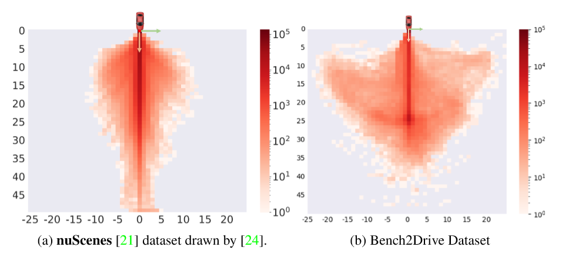
図5：自車両の将来位置の分布。Bench2Drive には旋回する軌跡がより多く含まれており、行動の多様性が高いことを示している。そのため、より良い学習データを提供し、オープンループ評価とクローズドループ評価の間のギャップも小さい。
図中ラベル：(a) nuScenes [21] dataset drawn by [24]＝(a) ［24］が描画した nuScenes［21］データセット、(b) Bench2Drive Dataset＝(b) Bench2Drive データセット。縦軸・横軸は自車両を原点とする位置（m）、カラーバーは頻度（対数スケール）。
4.3 事例分析
我々は可視化を行い、その結果を https://github.com/Thinklab-SJTU/Bench2DriveZoo/blob/uniad/vad/analysis/analysis.md にアップロードした。比較と分析を容易にするため、5 つの能力すべてについて、一部のベースラインが成功し一部のベースラインが失敗する代表的なシナリオをいくつか選んで可視化した。対応する失敗分析も示しており、利用者や実務者が既存の E2E-AD 手法の長所、短所、今後の課題について感覚をつかめるようにしている。
5 結論
本研究では、エンドツーエンド自動運転手法のクローズドループ評価に特化した新しいベンチマーク Bench2Drive を提示した。我々は、公式学習セットとしての完全にアノテーションされた大規模データセットと、きめ細かな運転スキル評価のための多能力評価ツールキットをオープンソースとして公開する。最先端の E2E-AD 手法を Bench2Drive で試験してそれらの長所と短所を評価し、今後の方向性に対する知見を提供した。
限界：CARLA のシミュレーションのレンダリングは現実世界とのギャップがあるため、並行研究である NAVSIM［65］で行われているように、現実世界のデータセットを利用することは相補的でありうる。実際、エンドツーエンド自動運転アルゴリズムの評価については、この分野にジレンマが存在する。
| 画像の出所 | 長所 | 短所 |
|---|---|---|
| 実世界データセット | 現実的 | 反応しない（Non-Reactive） |
| シミュレーションによるレンダリング | 反応する（Reactive） | アニメ調の見た目 |
拡散モデル［66］のような生成モデルは現実的かつ反応的なレンダリングを提供する可能性があり、この分野にはいくつかの先駆的な研究がある［67–69］。しかし、拡散モデルの幻覚（illusion）やアーティファクトの問題はさらなる探究を要する。
社会的影響：AD システムの展開は交通に革命をもたらす計り知れない可能性を秘めているが、同時に重大な倫理的・安全上の懸念ももたらす。Bench2Drive は、制御されたシミュレーション環境で AD システムの能力を厳密に検証するためのプラットフォームとして機能し、実世界への展開前に潜在的な欠陥を特定するのに役立ちうる。主要なリスクの 1 つは、シミュレーションと現実のギャップ、すなわちシミュレーションと実世界とで AD システムの性能が異なることである。シミュレーションでは、実世界の運転条件の複雑さと予測不可能性を完全に再現することは難しい。AD システムがシミュレーションでは良好に動作しても、まれなエッジケース、予期しない人間の行動、変化する環境条件といったモデル化されていない要因により、実世界のシナリオでは失敗するリスクがある。Bench2Drive は実世界での試験を置き換えるものではなく補完することを意図しており、シミュレーションは広範な路上試験を含まなければならないより広い検証プロセスの一部にすぎないことを強調することが極めて重要である。
参考文献
参考文献は原文のまま掲載した（各項目末尾の、引用箇所のページ番号を示すバックリンクは省略した）。
- Rishi Bommasani, Drew A Hudson, Ehsan Adeli, Russ Altman, Simran Arora, Sydney von Arx, Michael S Bernstein, Jeannette Bohg, Antoine Bosselut, Emma Brunskill, et al. On the opportunities and risks of foundation models. arXiv preprint arXiv:2108.07258, 2021.
- Team OpenAI. Gpt-4 technical report. 2023.
- Zhenjie Yang, Xiaosong Jia, Hongyang Li, and Junchi Yan. Llm4drive: A survey of large language models for autonomous driving. ArXiv, abs/2311.01043, 2023.
- Yihan Hu, Jiazhi Yang, Li Chen, Keyu Li, Chonghao Sima, Xizhou Zhu, Siqi Chai, Senyao Du, Tianwei Lin, Wenhai Wang, et al. Planning-oriented autonomous driving. In CVPR, pages 17853–17862, 2023.
- Penghao Wu, Xiaosong Jia, Li Chen, Junchi Yan, Hongyang Li, and Yu Qiao. Trajectory-guided control prediction for end-to-end autonomous driving: A simple yet strong baseline. NeurIPS, 35:6119–6132, 2022.
- Kashyap Chitta, Aditya Prakash, Bernhard Jaeger, Zehao Yu, Katrin Renz, and Andreas Geiger. Transfuser: Imitation with transformer-based sensor fusion for autonomous driving. TPAMI, 2023.
- Yinda Xu, Zeyu Wang, Zuoxin Li, Ye Yuan, and Gang Yu. Siamfc++: Towards robust and accurate visual tracking with target estimation guidelines. In AAAI, pages 12549–12556, 2020.
- Yinda Xu and Lidong Yu. Drl-based trajectory tracking for motion-related modules in autonomous driving. arXiv preprint arXiv:2308.15991, 2023.
- Hongyang Li, Chonghao Sima, Jifeng Dai, Wenhai Wang, Lewei Lu, Huijie Wang, Jia Zeng, Zhiqi Li, Jiazhi Yang, Hanming Deng, Hao Tian, Enze Xie, Jiangwei Xie, Li Chen, Tianyu Li, Yang Li, Yulu Gao, Xiaosong Jia, Si Liu, Jianping Shi, Dahua Lin, and Yu Qiao. Delving into the devils of bird's-eye-view perception: A review, evaluation and recipe. TPAMI, pages 1–20, 2023.
- Zhiqi Li, Wenhai Wang, Hongyang Li, Enze Xie, Chonghao Sima, Tong Lu, Yu Qiao, and Jifeng Dai. Bevformer: Learning bird's-eye-view representation from multi-camera images via spatiotemporal transformers. ECCV, 2022.
- Zhijian Liu, Haotian Tang, Alexander Amini, Xingyu Yang, Huizi Mao, Daniela Rus, and Song Han. Bevfusion: Multi-task multi-sensor fusion with unified bird's-eye view representation. In ICRA, 2023.
- Xianliang Huang, Jiajie Gou, Shuhang Chen, Zhizhou Zhong, Jihong Guan, and Shuigeng Zhou. Iddr-ngp: Incorporating detectors for distractors removal with instant neural radiance field. In Proceedings of the 31st ACM International Conference on Multimedia, pages 1343–1351, 2023.
- Yutao Zhu, Xiaosong Jia, Xinyu Yang, and Junchi Yan. Flatfusion: Delving into details of sparse transformer-based camera-lidar fusion for autonomous driving, 2024.
- Xiaosong Jia, Liting Sun, Hang Zhao, Masayoshi Tomizuka, and Wei Zhan. Multi-agent trajectory prediction by combining egocentric and allocentric views. In CoRL, pages 1434–1443. PMLR, 2022.
- Xiaosong Jia, Li Chen, Penghao Wu, Jia Zeng, Junchi Yan, Hongyang Li, and Yu Qiao. Towards capturing the temporal dynamics for trajectory prediction: a coarse-to-fine approach. In CoRL, pages 910–920. PMLR, 2023.
- Xiaosong Jia, Penghao Wu, Li Chen, Yu Liu, Hongyang Li, and Junchi Yan. Hdgt: Heterogeneous driving graph transformer for multi-agent trajectory prediction via scene encoding. TPAMI, 2023.
- Xiaosong Jia, Shaoshuai Shi, Zijun Chen, Li Jiang, Wenlong Liao, Tao He, and Junchi Yan. Amp: Autoregressive motion prediction revisited with next token prediction for autonomous driving. arXiv preprint arXiv:2403.13331, 2024.
- Xiaosong Jia, Liting Sun, Masayoshi Tomizuka, and Wei Zhan. Ide-net: Interactive driving event and pattern extraction from human data. IEEE RA-L, 6(2):3065–3072, 2021.
- Daniel Dauner, Marcel Hallgarten, Andreas Geiger, and Kashyap Chitta. Parting with misconceptions about learning-based vehicle motion planning. In CoRL, 2023.
- Yazhe Niu, Yuan Pu, Zhenjie Yang, Xueyan Li, Tong Zhou, Jiyuan Ren, Shuai Hu, Hongsheng Li, and Yu Liu. Lightzero: A unified benchmark for monte carlo tree search in general sequential decision scenarios. Advances in Neural Information Processing Systems, 36, 2024.
- Holger Caesar, Varun Bankiti, Alex H. Lang, Sourabh Vora, Venice Erin Liong, Qiang Xu, Anush Krishnan, Yu Pan, Giancarlo Baldan, and Oscar Beijbom. nuscenes: A multimodal dataset for autonomous driving. In CVPR, 2020.
- Bo Jiang, Shaoyu Chen, Qing Xu, Bencheng Liao, Jiajie Chen, Helong Zhou, Qian Zhang, Wenyu Liu, Chang Huang, and Xinggang Wang. Vad: Vectorized scene representation for efficient autonomous driving. ICCV, 2023.
- Jiang-Tian Zhai, Ze Feng, Jihao Du, Yongqiang Mao, Jiang-Jiang Liu, Zichang Tan, Yifu Zhang, Xiaoqing Ye, and Jingdong Wang. Rethinking the open-loop evaluation of end-to-end autonomous driving in nuscenes. arXiv preprint arXiv:2305.10430, 2023.
- Zhiqi Li, Zhiding Yu, Shiyi Lan, Jiahan Li, Jan Kautz, Tong Lu, and José M. Álvarez. Is ego status all you need for open-loop end-to-end autonomous driving? ArXiv, abs/2312.03031, 2023.
- Stéphane Ross, Geoffrey Gordon, and Drew Bagnell. A reduction of imitation learning and structured prediction to no-regret online learning. In Proceedings of the fourteenth international conference on artificial intelligence and statistics, pages 627–635. JMLR Workshop and Conference Proceedings, 2011.
- Pim De Haan, Dinesh Jayaraman, and Sergey Levine. Causal confusion in imitation learning. NeurIPS, 32, 2019.
- Xiaosong Jia, Yulu Gao, Li Chen, Junchi Yan, Patrick Langechuan Liu, and Hongyang Li. Driveadapter: Breaking the coupling barrier of perception and planning in end-to-end autonomous driving. In ICCV, 2023.
- Alexey Dosovitskiy, German Ros, Felipe Codevilla, Antonio Lopez, and Vladlen Koltun. Carla: An open urban driving simulator. In CoRL, pages 1–16. PMLR, 2017.
- Dian Chen and Philipp Krähenbühl. Learning from all vehicles. In CVPR, pages 17222–17231, 2022.
- Xiaosong Jia, Penghao Wu, Li Chen, Jiangwei Xie, Conghui He, Junchi Yan, and Hongyang Li. Think twice before driving: Towards scalable decoders for end-to-end autonomous driving. In CVPR, 2023.
- Qifeng Li, Xiaosong Jia, Shaobo Wang, and Junchi Yan. Think2drive: Efficient reinforcement learning by thinking in latent world model for quasi-realistic autonomous driving (in carla-v2). arXiv preprint arXiv:2402.16720, 2024.
- Andreas Geiger, Philip Lenz, and Raquel Urtasun. Are we ready for autonomous driving? the kitti vision benchmark suite. In CVPR, 2012.
- Robert Krajewski, Julian Bock, Laurent Kloeker, and Lutz Eckstein. The highd dataset: A drone dataset of naturalistic vehicle trajectories on german highways for validation of highly automated driving systems. In ITSC, pages 2118–2125. IEEE, 2018.
- Julian Bernhard, Klemens Esterle, Patrick Hart, and Tobias Kessler. Bark: Open behavior benchmarking in multi-agent environments. In 2020 IEEE/RSJ International Conference on Intelligent Robots and Systems (IROS), pages 6201–6208. IEEE, 2020.
- Benjamin Wilson, William Qi, Tanmay Agarwal, John Lambert, Jagjeet Singh, Siddhesh Khandelwal, Bowen Pan, Ratnesh Kumar, Andrew Hartnett, Jhony Kaesemodel Pontes, Deva Ramanan, Peter Carr, and James Hays. Argoverse 2: Next generation datasets for self-driving perception and forecasting. In NeurIPS Datasets and Benchmarks, 2021.
- Pei Sun, Henrik Kretzschmar, Xerxes Dotiwalla, Aurelien Chouard, Vijaysai Patnaik, Paul Tsui, James Guo, Yin Zhou, Yuning Chai, Benjamin Caine, et al. Scalability in perception for autonomous driving: Waymo open dataset. In CVPR, pages 2446–2454, 2020.
- Cole Gulino, Justin Fu, Wenjie Luo, George Tucker, Eli Bronstein, Yiren Lu, Jean Harb, Xinlei Pan, Yan Wang, Xiangyu Chen, et al. Waymax: An accelerated, data-driven simulator for large-scale autonomous driving research. NeurIPS, 36, 2024.
- Napat Karnchanachari, Dimitris Geromichalos, Kok Seang Tan, Nanxiang Li, Christopher Eriksen, Shakiba Yaghoubi, Noushin Mehdipour, Gianmarco Bernasconi, Whye Kit Fong, Yiluan Guo, et al. Towards learning-based planning: The nuplan benchmark for real-world autonomous driving. arXiv preprint arXiv:2403.04133, 2024.
- Runze Liu, Fengshuo Bai, Yali Du, and Yaodong Yang. Meta-reward-net: Implicitly differentiable reward learning for preference-based reinforcement learning. In S. Koyejo, S. Mohamed, A. Agarwal, D. Belgrave, K. Cho, and A. Oh, editors, Advances in Neural Information Processing Systems, volume 35, pages 22270–22284. Curran Associates, Inc., 2022.
- Fengshuo Bai, Hongming Zhang, Tianyang Tao, Zhiheng Wu, Yanna Wang, and Bo Xu. Picor: Multi-task deep reinforcement learning with policy correction. Proceedings of the AAAI Conference on Artificial Intelligence, 37(6):6728–6736, Jun. 2023.
- Fengshuo Bai, Rui Zhao, Hongming Zhang, Sijia Cui, Ying Wen, Yaodong Yang, Bo Xu, and Lei Han. Efficient preference-based reinforcement learning via aligned experience estimation. arXiv preprint arXiv:2405.18688, 2024.
- Katrin Renz, Kashyap Chitta, Otniel-Bogdan Mercea, A. Sophia Koepke, Zeynep Akata, and Andreas Geiger. Plant: explainable planning transformers via object-level representations. In CoRL, 2022.
- Bernhard Jaeger, Kashyap Chitta, and Andreas Geiger. Hidden biases of end-to-end driving models. In ICCV, 2023.
- Dean A Pomerleau. Alvinn: An autonomous land vehicle in a neural network. NeurIPS, 1, 1988.
- Ashish Vaswani, Noam M. Shazeer, Niki Parmar, Jakob Uszkoreit, Llion Jones, Aidan N. Gomez, Lukasz Kaiser, and Illia Polosukhin. Attention is all you need. In NeurIPS, 2017.
- Felipe Codevilla, Matthias Müller, Antonio López, Vladlen Koltun, and Alexey Dosovitskiy. End-to-end driving via conditional imitation learning. In ICRA, pages 4693–4700, 2018.
- Felipe Codevilla, Eder Santana, Antonio M López, and Adrien Gaidon. Exploring the limitations of behavior cloning for autonomous driving. In CVPR, pages 9329–9338, 2019.
- Marin Toromanoff, Emilie Wirbel, and Fabien Moutarde. End-to-end model-free reinforcement learning for urban driving using implicit affordances. In CVPR, pages 7153–7162, 2020.
- Dian Chen, Brady Zhou, Vladlen Koltun, and Philipp Krähenbühl. Learning by cheating. In CoRL, pages 66–75. PMLR, 2020.
- Zhejun Zhang, Alexander Liniger, Dengxin Dai, Fisher Yu, and Luc Van Gool. End-to-end urban driving by imitating a reinforcement learning coach. In ICCV, 2021.
- Shengchao Hu, Li Chen, Penghao Wu, Hongyang Li, Junchi Yan, and Dacheng Tao. St-p3: End-to-end vision-based autonomous driving via spatial-temporal feature learning. In ECCV, 2022.
- Han Lu, Xiaosong Jia, Yichen Xie, Wenlong Liao, Xiaokang Yang, and Junchi Yan. Activead: Planning-oriented active learning for end-to-end autonomous driving, 2024.
- Kashyap Chitta, Aditya Prakash, and Andreas Geiger. Neat: Neural attention fields for end-to-end autonomous driving. In ICCV, pages 15793–15803, 2021.
- Aditya Prakash, Kashyap Chitta, and Andreas Geiger. Multi-modal fusion transformer for end-to-end autonomous driving. In CVPR, 2021.
- Penghao Wu, Li Chen, Hongyang Li, Xiaosong Jia, Junchi Yan, and Yu Qiao. Policy pre-training for autonomous driving via self-supervised geometric modeling. In ICLR, 2023.
- Dian Chen and Philipp Krähenbühl. Learning from all vehicles. In CVPR, 2022.
- Hao Shao, Letian Wang, RuoBing Chen, Hongsheng Li, and Yu Liu. Safety-enhanced autonomous driving using interpretable sensor fusion transformer. CoRL, 2022.
- Anthony Hu, Gianluca Corrado, Nicolas Griffiths, Zak Murez, Corina Gurau, Hudson Yeo, Alex Kendall, Roberto Cipolla, and Jamie Shotton. Model-based imitation learning for urban driving. NeurIPS, 2022.
- Qingwen Zhang, Mingkai Tang, Ruoyu Geng, Feiyi Chen, Ren Xin, and Lujia Wang. Mmfn: multi-modal-fusion-net for end-to-end driving. IROS, 2022.
- Jimuyang Zhang, Zanming Huang, and Eshed Ohn-Bar. Coaching a teachable student. In CVPR, 2023.
- Jens Beißwenger. PDM-Lite: A rule-based planner for carla leaderboard 2.0. https://github.com/OpenDriveLab/DriveLM/blob/DriveLM-CARLA/docs/report.pdf, 2024.
- Ashesh Jain, Luca Del Pero, Hugo Grimmett, and Peter Ondruska. Autonomy 2.0: Why is self-driving always 5 years away? arXiv preprint arXiv:2107.08142, 2021.
- Petru Soviany, Radu Tudor Ionescu, Paolo Rota, and Nicu Sebe. Curriculum learning: A survey, 2022.
- Penghao Wu, Xiaosong Jia, Li Chen, Junchi Yan, Hongyang Li, and Yu Qiao. Trajectory-guided control prediction for end-to-end autonomous driving: A simple yet strong baseline. In NeurIPS, 2022.
- Daniel Dauner, Marcel Hallgarten, Tianyu Li, Xinshuo Weng, Zhiyu Huang, Zetong Yang, Hongyang Li, Igor Gilitschenski, Boris Ivanovic, Marco Pavone, Andreas Geiger, and Kashyap Chitta. Navsim: Data-driven non-reactive autonomous vehicle simulation and benchmarking. arXiv, 2406.15349, 2024.
- Jonathan Ho, Ajay Jain, and Pieter Abbeel. Denoising diffusion probabilistic models. Advances in neural information processing systems, 33:6840–6851, 2020.
- Jiazhi Yang, Shenyuan Gao, Yihang Qiu, Li Chen, Tianyu Li, Bo Dai, Kashyap Chitta, Penghao Wu, Jia Zeng, Ping Luo, Jun Zhang, Andreas Geiger, Yu Qiao, and Hongyang Li. Generalized predictive model for autonomous driving. In Proceedings of the IEEE/CVF Conference on Computer Vision and Pattern Recognition (CVPR), 2024.
- Shenyuan Gao, Jiazhi Yang, Li Chen, Kashyap Chitta, Yihang Qiu, Andreas Geiger, Jun Zhang, and Hongyang Li. Vista: A generalizable driving world model with high fidelity and versatile controllability. In Advances in Neural Information Processing Systems (NeurIPS), 2024.
- Yunsong Zhou, Michael Simon, Zhenghao Peng, Sicheng Mo, Hongzi Zhu, Minyi Guo, and Bolei Zhou. Simgen: Simulator-conditioned driving scene generation. arXiv preprint arXiv:2406.09386, 2024.
（訳注：原文の参考文献では［5］と［64］が同一論文（TCP）、［29］と［56］が同一論文（Learning from all vehicles）の重複掲載となっている。）
チェックリスト
チェックリストは参考文献の後に続く。これらの質問への回答方法については、チェックリストのガイドラインを注意深く読むこと。各質問について、デフォルトの [TODO] を [Yes]、[No]、または [N/A] に変更すること。論文の該当する節を参照するか、簡潔な説明をその場で記すかのいずれかにより、回答の根拠を含めることが強く推奨される。例：
- コードとデータセットのライセンスを含めたか？ [Yes] 3 節を参照。
質問を変更せず、回答には用意されたマクロのみを使用すること。チェックリストの節はページ制限に含まれないことに注意。論文中では、この説明ブロックを削除し、上記のチェックリストの節見出しと以下の質問／回答のみを残すこと。
（訳注：上の 2 段落は NeurIPS テンプレートの説明文であり、原文で削除されずに残っている。）
- すべての著者について…
- 要旨と序論で述べた主要な主張は、論文の貢献と範囲を正確に反映しているか？ [Yes]
- 研究の限界を記述したか？ [Yes]
- 研究の潜在的な負の社会的影響について議論したか？ [Yes]
- 倫理審査のガイドラインを読み、論文がそれに準拠していることを確認したか？ [Yes]
- 理論的結果を含める場合…
- すべての理論的結果について、仮定の完全な集合を述べたか？ [N/A]
- すべての理論的結果について、完全な証明を含めたか？ [N/A]
- 実験（例：ベンチマーク）を行った場合…
- 主要な実験結果を再現するために必要なコード、データ、手順を（補足資料または URL として）含めたか？ [Yes]
- すべての学習の詳細（例：データ分割、ハイパーパラメータ、それらの選び方）を明記したか？ [Yes]
- エラーバー（例：実験を複数回実行した後の乱数シードに関するもの）を報告したか？ [No]
- 計算量の総量と使用した資源の種類（例：GPU の種類、内部クラスタ、クラウドプロバイダ）を含めたか？ [Yes]
- 既存のアセット（例：コード、データ、モデル）を使用する場合、または新しいアセットを整備／公開する場合…
- 研究で既存のアセットを使用している場合、その作成者を引用したか？ [Yes]
- アセットのライセンスに言及したか？ [Yes]
- 新しいアセットを補足資料または URL として含めたか？ [Yes]
- 使用／整備しているデータの提供者から同意を得たかどうか、またどのように得たかについて議論したか？ [N/A]
- 使用／整備しているデータに個人を特定できる情報や不快なコンテンツが含まれるかどうかについて議論したか？ [N/A]
- クラウドソーシングを用いた場合、または人間の被験者を対象とした研究を行った場合…
- 該当する場合、参加者に与えた指示の全文とスクリーンショットを含めたか？ [N/A]
- 該当する場合、参加者の潜在的なリスクを、倫理審査委員会（IRB）の承認へのリンクとともに記述したか？ [N/A]
- 参加者に支払った推定時給と、参加者への謝礼の総額を含めたか？ [N/A]
A データ収集の詳細
データ収集は自動パイプラインと手動確認の組み合わせである。詳細を以下に示す。
ルート：エキスパートモデル Think2Drive を事前定義されたルートファイル上で走らせ、違反のないものだけを残す。シナリオを発生させられるかどうかを判定するために全マップを走査するアルゴリズムを設計し、タウンをできるだけ広く網羅することを目指した。天候、タウン、シナリオのバランスは手動確認によって確保している。図7 に示すように、CARLA の挙動やレンダリングにはときどきバグがあるため、そうした不良クリップは手動で除外している。
アノテーション：アノテーションの収集には CARLA の公式 API を利用する。注目すべきことに、API にはいくつかのバグがある。（I）API から得られる歩行者の速度値はすべて 0 である。ベースライン手法の学習時に、差分をとることで歩行者の速度を手動で計算している。（II）Speedometer と IMU の戻り値が None になることがある。学習時にはこれらの値を 0 で埋める。（III）CARLA の一部の一時停止標識は地面に描かれているため、バウンディングボックスが存在しない。これを補うため、すべての一時停止標識について、そのトリガー領域（trigger volume）を表す矩形を記録する。（IV）一部の静止車両の回転と位置が API で誤っている。そのため、正しい中心と範囲（extent）を用いてそれらの 3D バウンディングボックスを得る。
物体クラス：物体ごとに属性が異なることを考慮し、すべての物体を Vehicle（車両）、Traffic Sign（交通標識）、Traffic Light（信号機）、Pedestrian（歩行者）の 4 つの主要タイプに分類し、グループごとに保存する。車両はさらに静的車両と動的車両に細分される。静的車両はシナリオ全体を通じて静止したままであり、"static.prop.mesh" から得られる固有のアクター識別子によって区別される。交通標識は、speed_limit_sign、stop_sign、yield_sign、warning_sign（工事警告、交通警告、事故警告を含む）、dirt_debris、cone から成る。注目すべきことに、speed_limit_sign、stop_sign、yield_sign のように trigger_volume を伴う標識はトリガー領域を持つため、その矩形も保存する。警告標識とコーンの座標はそれぞれのアクタークラスの中心と範囲から得られるが、dirt_debris は座標が不正確なため追加の変換を要する。信号機については、交通標識と信号機のトリガー領域の座標はアクターに対する相対座標であるため、追加の変換が必要である。各交通標識／信号機は支柱と信号／標識本体の 2 つの部分から成るが、API から得られるバウンディングボックスは信号／標識本体のみである。
座標系：Nuscenes で用いられる Y 軸下向きの右手系とは異なり、CARLA は Unreal Engine の座標系、すなわち Z 軸上向きの左手座標系を採用している。Compass では、方位は北（Unreal Engine では [0.0, -1.0, 0.0]）を基準とするため、左手系における標準のヨー角はコンパスの theta から 1/2 pi を引いたものになる。まれにこれによって NaN 値が生じることがあり、手動で除外する必要がある。
マップ情報：HD マップは lane_index を伴う road_ids として構成されている。各車線は、点のワールド座標と向き、車線の種類、色の識別子、隣接する road_ids-lane_ids（左、右、および接続先の道路 ID と車線 ID）に加え、トポロジー構造（例：'Junction'、'Normal'、'EnterNormal'、'EnterJunction'、'PassNormal'、'PassJunction'、'StartJunctionMultiChange'、'StartNormalMultiChange'）を含む。Trigger_Volumes は標識のトリガー領域を表し、'Points' はトリガー領域の頂点の位置を、'Type' は 'StopSign' または 'TrafficLight' を指定し、'ParentActor_Location' はそのトリガー領域に関連付けられた親アクターの位置の詳細を与える。
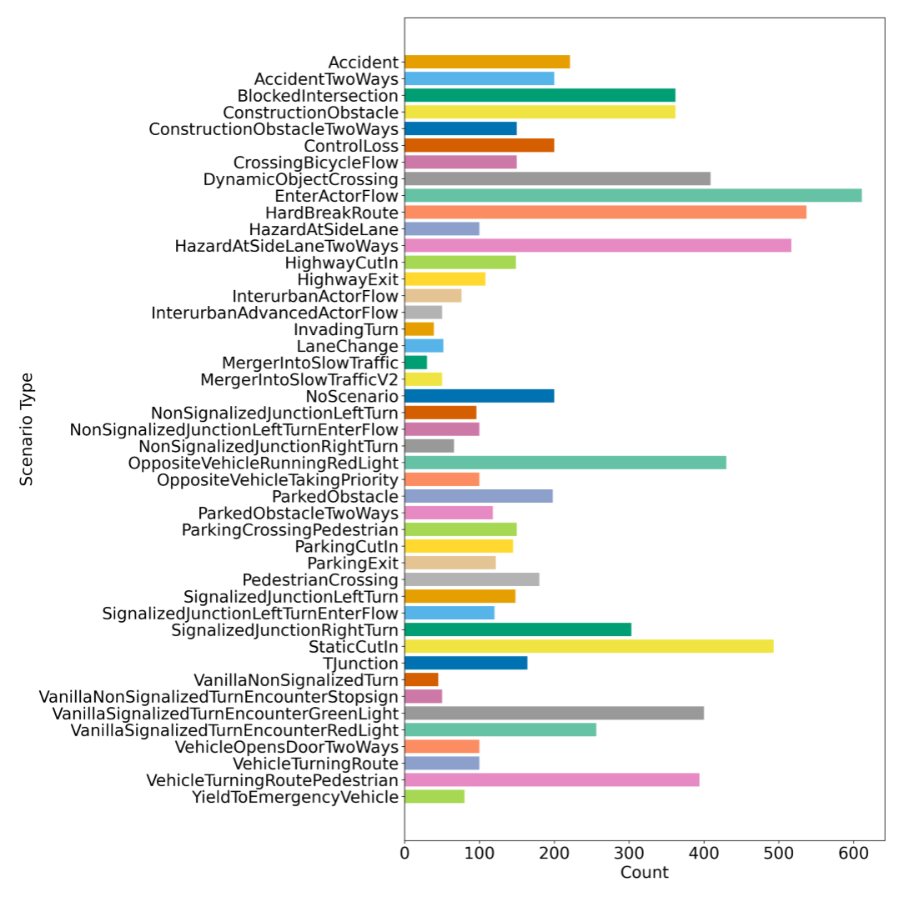
図6：Bench2Drive データセットのシナリオ分布
図中ラベル：Scenario Type＝シナリオの種類、Count＝件数。縦軸の各項目はシナリオ名（CARLA の識別子、NoScenario＝シナリオなし）のため原文のまま。
データ圧縮：ファイルサイズを削減するため、［43］に従い圧縮データ形式を採用した。画像は quality= 20 の JPG で圧縮する。クローズドループ評価時の学習・検証間のギャップを避けるため、推論時にもメモリ内での JPG 圧縮と伸長を行う。セマンティックセグメンテーションと深度データは PNG ファイルとして保存する。LiDAR 点群の圧縮には laszip と呼ばれる専用アルゴリズムを用いる。JSON ファイルは GZIP で圧縮する。
B シナリオ、タウン、天候の分布
図8 に示すように、天候の分布はほぼ均一である一方、タウンの分布は Town12 と Town13 が大半を占めている。この不均衡は 2 つの観点から生じている。（I）Town12 や Town13 のような新しいタウンは、コミュニティが都市レベルのシーンでの応用を探究できるよう、CARLA チームによって意図的に古いタウンよりはるかに大きく設計されている。そのため、より多様な景観を得るために、より大きなタウンでより多くのデータを収集している。（II）Leaderboard v2 の新しいシナリオの多くは最近設計されたものであり、古いタウンは新しいシナリオが必要とするレイアウトをサポートしていない。たとえば、駐車場からの発進（parking exit）には他の駐車車両の存在が必要である（訳注：原文は「parting exit」だが、文脈およびシナリオ名 ParkingExit から「parking exit」の誤植と判断した）。その結果、シナリオタイプのバランスを確保するために、新しいタウンでより多くのデータを収集せざるを得ない。
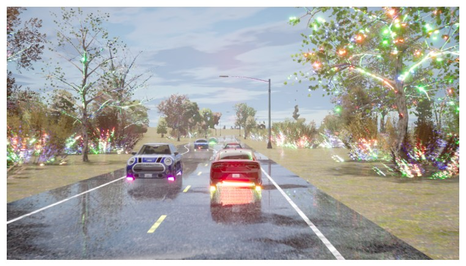
図7：CARLA のバグのあるレンダリング。
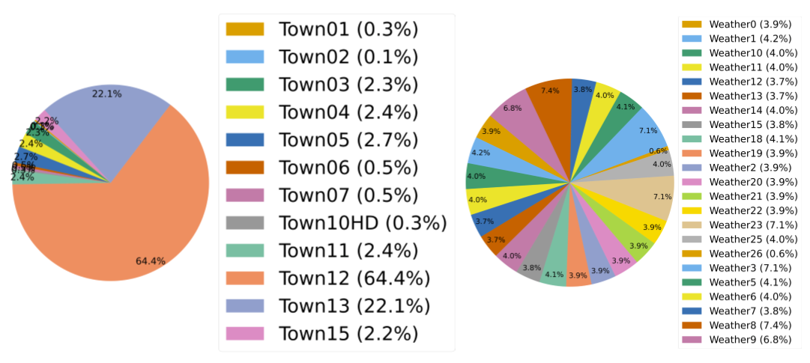
図8：Bench2Drive データセットのタウンと天候の分布
図中ラベル：左の円グラフはタウン（Town01〜Town15、Town10HD）ごとの割合、右の円グラフは天候プリセット（Weather0〜Weather26）ごとの割合。凡例の名称は CARLA の識別子のため原文のまま。
C ベースラインの実装の詳細
すべてのベースライン E2E-AD 手法について、公式にオープンソース化されたコード、環境、設定に厳密に従う。いくつかの変更点は次のとおりである。（I）物体検出モジュールを持つ手法については、検出クラスを CARLA3 に合わせて変更する。（II）Bench2Drive のデータ収集は 10Hz であるのに対し、バウンディングボックス付きの nuScenes は 2Hz である。Bench2Drive のクリップの方が長いため、Bench2Drive-base は nuScenes と比べて約 10 倍のフレームを持つが、冗長性も高い。UniAD/VAD/ThinkTwice/DriveAdapter のように計算負荷の高い手法については、元の版と比べて \(\frac{1}{10}\) のエポック数で学習する。学習ステップ数が同程度であるため、同程度の損失水準が観察される。（III）ThinkTwice と DriveAdapter はエキスパートの BEV 特徴量を必要とするため、Think2Drive エキスパートを用いてそれらのエキスパート特徴量を再生成する。さらに、他の手法との公平な比較のため、両者を LiDAR なしの 6 カメラ構成に変更する。
脚注3：https://carla.readthedocs.io/en/latest/catalogue_vehicles/
D 学習と評価に必要な計算資源
ベースラインの学習と評価に必要な計算資源を報告する。なお、より多くの GPU を用いてより多くのルートを並列に評価すれば、評価時間は線形に短縮できる。
| 学習 | 評価 | |
|---|---|---|
| AD-MLP | 1 A600 * 1 day | 4 A6000 * 6 hours |
| TCP | 1 A600 * 1 day | 4 A6000 * 6 hours |
| VAD | 8 H800 * 5 days | 8 H800 * 2 days |
| UniAD-base | 8 H800 * (3+3+3)=9 days | 8 H800 * 2 days |
表5：base セットでの学習と 220 ルートでの評価に必要な計算資源。UniAD の学習は BEVFormer、stage1、stage2 から成る。
（訳注：day＝日、hours＝時間。学習欄の「A600」は原文どおりだが、4.1 節の記述（1 * A6000）から A6000 の誤記と考えられる。また 4.1 節では VAD・UniAD 等を 8 * A100 で学習したとあり、本表の H800 と食い違っている。）
E NPC エージェントの挙動モデル
CARLA では、CARLA Agent に 3 つの挙動タイプ、すなわち cautious（慎重）、normal（通常）、aggressive（攻撃的）があらかじめ設定されている。これらの挙動タイプは NPC の運転行動を支配し、速度、他車両への反応、安全手順といった要素に影響する。各挙動モードの主要なパラメータは次のとおりである。
- max_speed：NPC 車両が到達できる最高速度（km/h）を設定する。
- speed_lim_dist：車両の目標速度が現在の制限速度からどれだけ離れるかを定める値（km/h）。
- speed_decrease：前方のより遅い車両に接近するときの NPC の減速を制御する。
- safety_time：前方の車両が急ブレーキをかけた場合の衝突までの時間を見積もる。
- min_proximity_threshold：NPC が回避操作や追従（テールゲーティング）などの行動をとる前の最小距離を定める。
- braking_distance：NPC が衝突を避けるために緊急停止を行う距離。
- tailgate_counter：NPC が前回の追従行動の直後に新たな追従行動を始めるのを防ぐカウンタ。
これらの挙動設計は自車両（自動運転車両）と相互作用し、シミュレーション内で NPC が自車両の存在と行動に反応することを保証する。異なる挙動スタイルのパラメータは次のとおりである。
| パラメータ | Cautious | Normal | Aggressive |
|---|---|---|---|
| max_speed (km/h) | 40 | 50 | 70 |
| speed_lim_dist (km/h) | 6 | 3 | 1 |
| speed_decrease (km/h) | 12 | 10 | 8 |
| safety_time (seconds) | 3 | 3 | 3 |
| min_proximity_threshold (meters) | 12 | 10 | 8 |
| braking_distance (meters) | 6 | 5 | 4 |
| tailgate_counter (times) | 0 | 0 | -1 |
表6：Cautious（慎重）、Normal（通常）、Aggressive（攻撃的）の挙動パラメータの比較。
単位：seconds＝秒、meters＝メートル、times＝回。
非プレイヤーキャラクター（NPC）車両のための behavior_agent.py におけるルールベースの挙動決定アルゴリズムを以下に示す。
歩行者の挙動は、一定速度で経路線に一貫して従い、後ろ向きに歩くことができないという特徴を持つ。自動運転のシナリオでは、歩行者の安全が最も重要である。自動運転車両が人間と相互作用する際には歩行者が最優先であり、自動運転車両は交通状況にかかわらず歩行者に道を譲ることを学習すべきである。
F 違反スコアの詳細
表7 に、Leaderboard v2 で設計された各違反のペナルティスコアを示す。
アルゴリズム 1 非プレイヤーキャラクター（NPC）車両の挙動決定
1: 車両の周囲情報を更新（Update vehicle's surrounding information）
2: if 赤信号 or 一時停止標識を検出 then
3: return emergency_stop()
4: end if
5: if 歩行者を検出 and 制動距離内 then
6: return emergency_stop()
7: end if
8: if 他の車両が近くにいる then
9: if 制動距離内 then
10: return emergency_stop()
11: else
12: return car_following()
13: end if
14: else if 自車両が交差点にいる and （左折 or 右折） then
15: adjust_speed_limit()
16: return PID_Control
17: else if 通常の運転条件 then
18: maintain_speed_limit()
19: return PID_Control
20: end if| 違反 | ペナルティ | 備考 |
|---|---|---|
| 歩行者との衝突（Pedestrian Collision） | 0.50 | 違反のたびにペナルティを科す。 |
| 車両との衝突（Vehicles Collision） | 0.60 | 違反のたびにペナルティを科す。 |
| その他の衝突（Other Collision） | 0.65 | 違反のたびにペナルティを科す。 |
| 信号無視（Running Red Light） | 0.70 | 違反のたびにペナルティを科す。 |
| シナリオのタイムアウト（Scenario Timeout） | 0.70 | 特定のシナリオを 4 分以内に通過できない。 |
| 低速すぎ（Too Slow） | 0.70 | 周囲の車両に対して適切な速度を維持できない。 |
| 道を譲らない（No Give Way） | 0.70 | 緊急車両に道を譲らない。 |
| 路外走行（Off-road） | - | ルート完遂率に算入されない。 |
| ルート逸脱（Route Deviation） | - | 30 メートル以上逸脱。即時終了。 |
| エージェントの立ち往生（Agent Blocked） | - | 180 秒間行動なし。即時終了。 |
| ルートのタイムアウト（Route Timeout） | - | 最大制限時間を超過。即時終了。 |
表7：違反の種類とペナルティ。https://leaderboard.carla.org/ に従う。
G シナリオの説明
Bench2Drive は、CARLA Leaderboard V2 から拡張した 44 のコーナーケースシナリオを提供する。以下にそれらの詳細を示す。
1. ControlLoss
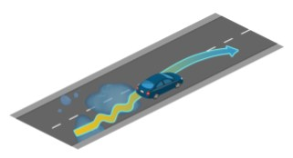
自車両は路面の悪条件により制御を失い、元の車線に戻って立て直さなければならない。
2. ParkingExit
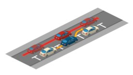
自車両は縦列駐車スペースから交通の流れの中へ出なければならない。
3. ParkingCutIn
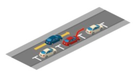
自車両は、縦列駐車スペースから出てくる駐車車両が前方に割り込めるよう、減速またはブレーキをかけなければならない。
4. StaticCutIn
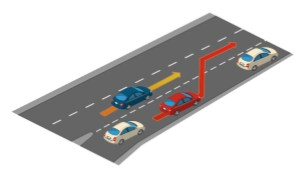
自車両は、隣接車線の低速な交通流の車両が前方に割り込めるよう、減速またはブレーキをかけなければならない。ParkingCutIn と比べて隣接車線の車両が多く、そのうちどの車両も割り込んでくる可能性がある。
5. ParkedObstacle
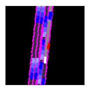
自車両は車線の一部をふさぐ駐車車両に遭遇し、それを避けるために同方向に流れる交通へ車線変更しなければならない。
6. ParkedObstacleTwoWays
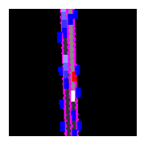
ParkedObstacle の「TwoWays」版。自車両は車線をふさぐ駐車車両に遭遇し、それを避けるために対向方向に流れる交通へ車線変更しなければならない。
7. Construction
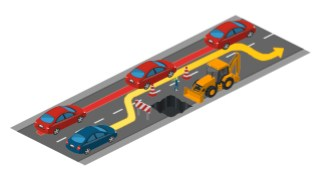
自車両は道をふさぐ工事現場に遭遇し、それを避けるために同方向に流れる交通へ車線変更しなければならない。ParkedObstacle と比べて、工事現場は車線のより広い幅を占める。自車両は工事区域を迂回するため、一時的にタスクルートから完全に外れなければならない。
8. ConstructionTwoWays
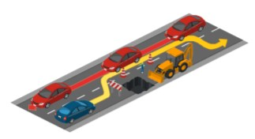
Construction の「TwoWays」版。
9. Accident
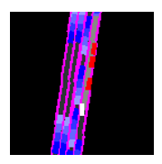
自車両は車線の一部をふさぐ複数の事故車両に遭遇し、それを避けるために同方向に流れる交通へ車線変更しなければならない。ParkedObstacle や Construction と比べて、これらの事故車両は車線に沿ってより長い区間を占める。自車両は事故区域を迂回するため、より長い時間タスクルートから完全に外れなければならない。
10. AccidentTwoWays
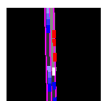
Accident の「TwoWays」版。ParkedObstacleTwoWays や ConstructionTwoWays と比べて、自車両がルート上の障害物（例：事故車両）を迂回するための時間的猶予がはるかに短い。
11. HazardAtSideLane
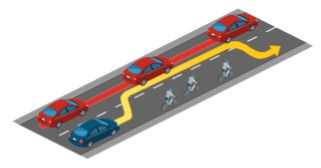
自車両は車線の一部をふさぐ低速で移動する危険物に遭遇する。自車両はそれを避けるため、ブレーキをかけるか、同方向に流れる交通の車線の脇で操舵回避しなければならない。
12. HazardAtSideLaneTwoWays
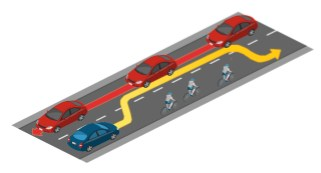
自車両は車線の一部をふさぐ低速で移動する危険物に遭遇する。自車両は、対向方向に流れる交通の車線の脇で、ブレーキをかけるか操舵してそれを回避しなければならない。
13. VehiclesDooropenTwoWays
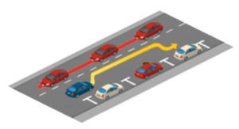
自車両は、自車線側にドアを開ける駐車車両に遭遇し、それを避けるよう操舵しなければならない。（訳注：見出しは原文どおり。表2 では VehicleOpenDoorTwoWays、図6 では VehicleOpensDoorTwoWays と表記されている。）
14. DynamicObjectCrossing
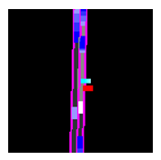
自車両が静的な障害物（プロップ）に近づいたとき、その陰にいた歩行者または自転車が突然道路を横断する。自車両は即座に急ブレーキをかけなければならない。
15. ParkingCrossingPedestrian
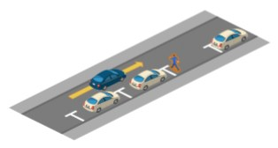
自車両は、駐車車両の陰から現れて車線内に進んでくる歩行者に遭遇する。自車両はそれを避けるためにブレーキをかけるか操舵しなければならない。DynamicObjectCrossing と比べて、歩行者が道路により近く、自車両はより迅速に行動しなければならない。
16. HardBrake
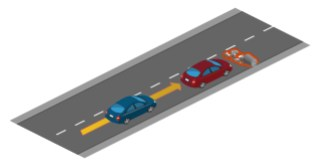
先行車両が急減速し、自車両は緊急ブレーキまたは回避操作を行わなければならない。
17. YieldToEmergencyVehicle
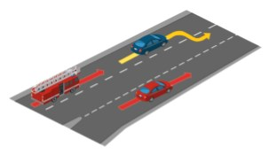
自車両に後方から緊急車両が接近してくる。自車両は緊急車両が通過できるよう操舵しなければならない。
18. InvadingTurn
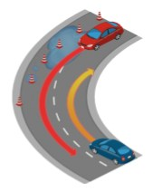
自車両が右折しようとするとき、対向車線から来た車両が自車線に侵入してくるため、自車両は衝突の可能性を避けるために右へ寄らざるを得ない。
19. PedestrainCrossing
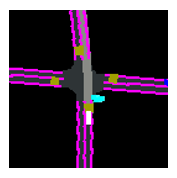
自車両が交差点に進入している最中に、一団の歩行者が信号を無視して突然道路を横断する。たとえ青信号であっても、あるいは交差点が空いていても、自車両は停止してすべての歩行者が通過するのを待たなければならない。（訳注：見出しの「PedestrainCrossing」は原文どおり。PedestrianCrossing の誤記と思われる。）
20. VehicleTurningRoutePedestrian
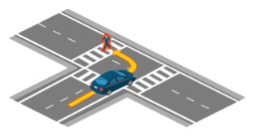
操舵操作（右左折）の最中に、自車両は道路を横断する歩行者に遭遇し、緊急ブレーキまたは回避操作を行わなければならない。
21. VehicleTurningRoute 操舵操作（右左折）の最中に、自車両は道路を横断する自転車に遭遇し、緊急ブレーキまたは回避操作を行わなければならない。VehicleTurningRoutePedestrian と比べて自転車の移動速度が速く、自車両はより早くブレーキをかけなければならない。
22. BlockedIntersection
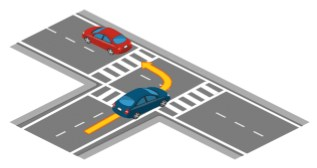
操舵操作（右左折）の最中に、自車両は道路上に停止している車両に遭遇し、緊急ブレーキまたは回避操作を行わなければならない。
23. SignalizedJunctionLeftTurn
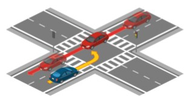
自車両は交差点で保護されていない左折（右左折専用の信号がない左折）を行っており、対向車に道を譲る。
24. SignalizedJunctionLeftTurnEnterFlow
自車両は交差点で保護されていない左折を行い、対向方向の交通に合流する。
25. NonSignalizedJunctionLeftTurn
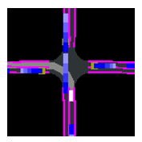
SignalizedJunctionLeftTurn の信号なし版。自車両は信号機なしで対向車両と交渉しなければならない。
26. NonSignalizedJunctionLeftTurnEnterFlow
SignalizedJunctionLeftTurnEnterFlow の信号なし版。
27. SignalizedJunctionRightTurn
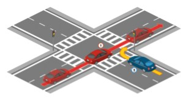
自車両は交差点で右折しており、左から来る交通の流れに安全に合流しなければならない。
28. NonSignalizedJunctionRightTurn
SignalizedJunctionRightTurn の信号なし版。自車両は信号機なしで交通の流れと交渉しなければならない。
29. EnterActorFlows
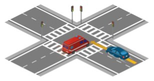
自車両が交差点に進入するとき、その前方で車両の流れが赤信号を無視して通過するため、自車両は反応（流れを遮る、または流れに合流する）を強いられる。これらの車両は、パトカー、救急車、消防車のような「特殊」車両である。
30. HighwayExit
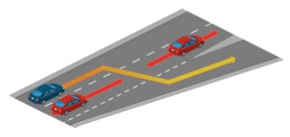
自車両は、出口ランプから高速道路を出るために、走行中の交通の車線を横切らなければならない。
31. MergerIntoSlowTraffic
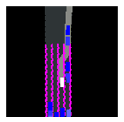
自車両は高速道路を出る際に、出口ランプ上の低速な交通の流れに合流しなければならない。
32. MergerIntoSlowTrafficV2
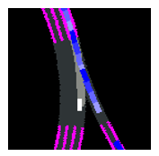
自車両は高速道路を走行中に、入口ランプから来る低速な交通の流れに合流しなければならない。
33. InterurbanActorFlow
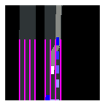
自車両は左折して都市間道路を離れ、高速な交通の流れを横切る。
34. InterurbanAdvancedActorFlow
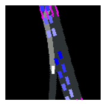
自車両は左折して都市間道路に入る。まず高速な交通の流れを横切り、その後別の流れに合流する。
35. HighwayCutIn
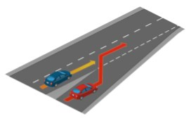
自車両は、高速道路の入口ランプから自車線に合流してくる車両に遭遇する。自車両は衝突を避けるために減速、ブレーキ、または車線変更を行わなければならない。
36. CrossingBicycleFlow
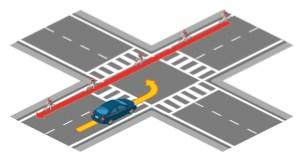
自車両は交差点で旋回を行う必要があり、左から横断してくる自転車に道を譲らなければならない。（訳注：原文は「from either the left」で、「either the left or the right」の一部が欠落していると思われる。）
37. OppositeVehicleRunningRedLight
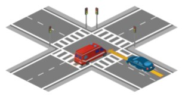
自車両は交差点を直進しているが、交差する車両が赤信号を無視するため、自車両は衝突を回避しなければならない。
38. OppositeVehicleTakingPriority
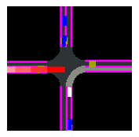
OppositeVehicleTakingPriority の信号なし版。（訳注：原文どおりだが自己参照になっており、文脈上は OppositeVehicleRunningRedLight の信号なし版の意と考えられる。）
39. VinillaNonSignalizedTurn
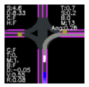
自車両が信号のない交差点（交通標識も信号機もない交差点）の通過を学習するための基本シナリオ。（訳注：39〜42 の見出しの「Vinilla」は原文どおり。表2・図6 では「Vanilla」と表記されている。）
40. VinillaNonSignalizedTurnEncounterStopsign
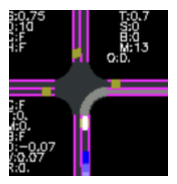
自車両が一時停止標識で停止して発進することを学習するための基本シナリオ。
41. VinillaSignalizedTurnEncounterGreenLight
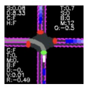
自車両が信号のある交差点の通過を学習するための基本シナリオ。
42. VinillaSignalizedTurnEncounterRedLight
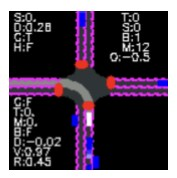
信号が赤から青に変わったときに、自車両が信号のある交差点の通過を学習するための基本シナリオ。
43. LaneChange
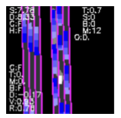
自車両が車線変更と衝突回避を学習するための基本シナリオ。
44. TJunction
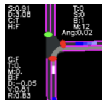
自車両が T 字路の通過を学習するための基本シナリオ。
（訳注：G 節の上空視点の画像に含まれる英字（S、D、T、M など）はシミュレータのデバッグ表示であり、訳出していない。）
H 著者声明
権利侵害等が生じた場合、我々がすべての責任を負う。また、データ、コード、チェックポイントのライセンスは 3 節に記載のとおりであることを確認する。
I ライセンス
すべてのデータ、コード、チェックポイントは Apache License 2.0 のもとで GitHub と Huggingface で公開されている。
J データシート
J.1 動機
データセットはどのような目的で作成されたか？特定のタスクを想定していたか？埋める必要のある特定のギャップがあったか？説明せよ。完全自動運転（FSD）のための包括的で現実的な試験環境の必要性を満たすために、このベンチマークを構築した。主要なタスクはエンドツーエンド自動運転である。既存のベンチマークは、E2E-AD 手法の運転スキルについてクローズドループできめ細かな評価を提供できていなかった。
データセットを作成したのは誰か（例：どのチーム、研究グループ）、またどの主体（例：企業、機関、組織）のために作成したか？このデータセットは、上海交通大学 School of AI および Department of CSE の ReThinkLab に所属する Xiaosong Jia、Zhenjie Yang、Qifeng Li、Zhiyuan Zhang、Junchi Yan によって整備された。
J.2 配布
データセットは、作成した主体（例：企業、機関、組織）の外部の第三者に配布されるか？はい。
データセットはどのように配布されるか（例：ウェブサイト上の tarball、API、GitHub）？すべてのデータ、コード、チェックポイントは GitHub（https://github.com/Thinklab-SJTU/Bench2Drive）と Huggingface（https://huggingface.co/datasets/rethinlab/Bench2Drive）で公開されている。
J.3 保守
データセットのサポート／ホスティング／保守は誰が行うか？全著者、および将来的には Junchi Yan 教授が率いる上海交通大学 ReThinLab の新メンバーが行う。
データセットの所有者／整備者／管理者にはどのように連絡できるか（例：電子メールアドレス）？Xiasong Jia（jiaxiaosong@sjtu.edu.cn）および Junchi Yan（yanjunchi@sjtu.edu.cn）に連絡されたい。（訳注：「Xiasong」「ReThinLab」は原文どおり。それぞれ Xiaosong、ReThinkLab の誤記と思われる。）
正誤表はあるか？投稿時点で正誤表はない。
データセットは更新されるか（例：ラベルの誤りの修正、新しいインスタンスの追加、インスタンスの削除）？はい、データセットを保守していく。
データセットの旧バージョンも引き続きサポート／ホスティング／保守されるか？はい。
他者がデータセットを拡張／増強／発展／貢献したい場合、そのための仕組みはあるか？はい、https://github.com/Thinklab-SJTU/Bench2Drive のガイドに従うことができる。
J.4 構成
データセットを構成するインスタンスは何を表すか？基本インスタンス 1 つが 1 本のクリップである。各クリップは、生のセンサ情報とアノテーションを伴う 10 Hz の数百〜数千フレームを含む。
インスタンスは合計でいくつあるか（適切であれば種類ごとに）？Bench2Drive には 13638 本のクリップがある。
個々のインスタンス間の関係は明示されているか？はい。各クリップにはシナリオの種類と場所がアノテーションされている。クリップ同士が同じシナリオの種類や近い場所を持つことがある。
推奨されるデータ分割（例：学習、開発／検証、テスト）はあるか？はい。GitHub リポジトリにある。
データセットは自己完結しているか、それとも外部リソースへのリンクや依存があるか？自己完結している。
J.5 収集過程
データ収集過程には誰が関与し（例：学生、クラウドワーカー、請負業者）、どのように報酬が支払われたか（例：クラウドワーカーへの支払額）？すべてのデータは CARLA で自動的に収集される。収集コードは著者らが作成した。
J.6 用途
データセットは（他に）どのようなタスクに使用できるか？既存のアノテーションにより、このデータセットは 3D 物体検出、セマンティックセグメンテーション、インスタンスセグメンテーション、点群セグメンテーション、深度推定、追跡、動き予測の実施にも使用できる。